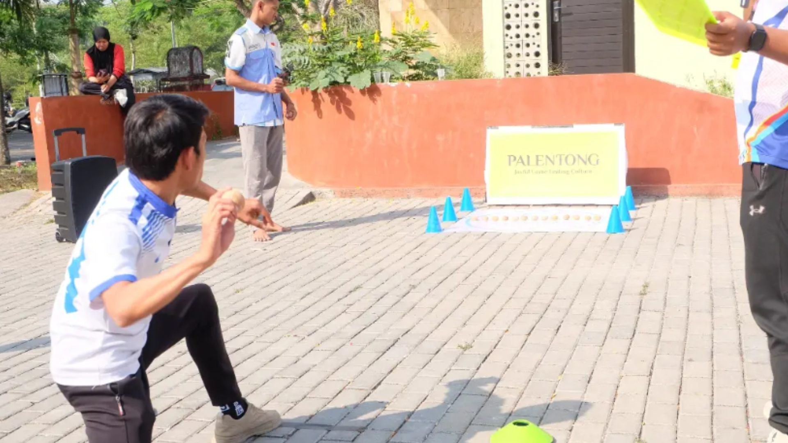

Palentong: Adu Tepat Sasaran Kayu

Sejarah dan Adaptasi Modern
Sebelum menjadi olahraga prestasi, Palentong berakar dari permainan rakyat musiman di Nusa Tenggara Barat (NTB). Di Pulau Lombok, permainan ini dikenal sebagai Main Santek atau Beloncek Lekong, menggunakan biji kemiri. Sementara di Pulau Sumbawa, permainan serupa dinamakan Rabanga, menggunakan biji jambu mete atau kerang.
Untuk menyelamatkan warisan budaya ini, para akademisi olahraga NTB bersama Komite Permainan Rakyat dan Olahraga Tradisional Indonesia (KPOTI) NTB menyatukan dan membakukan permainan-permainan tersebut ke dalam satu nama baru: Palentong. Proses modernisasi ini meliputi standardisasi alat, lapangan, dan aturan pertandingan agar lebih adil dan kompetitif.
Peralatan Permainan
- Taba (Alat Sasaran/Lempar): Balok kayu bulat lonjong (umumnya dari kayu mahoni) yang telah distandarisasi untuk menggantikan biji-bijian tradisional.
- Spesifikasi Taba: Diameter 5 cm, tinggi 4,5 cm, berat 30-60 gram, dan ditandai dua garis melingkar.
Peraturan dan Sistem Lomba
- Penentuan Giliran: Diawali dengan tos atau suwit. Pemenang berhak memilih untuk melempar pertama atau memberi kesempatan pada lawan.
- Teknik Tembakan: Setiap pemain melempar secara bergiliran. Teknik yang dibakukan adalah Lemparan Duduk (Dasar Lantai) dan Lemparan Berdiri (Manang), dengan posisi tangan memegang taba membentuk huruf "C".
- Jarak Lemparan: Jarak lempar disesuaikan berdasarkan perkembangan motorik anak. Tingkat SD menggunakan jarak 3, 4, dan 5 meter, sementara tingkat SMP menggunakan jarak 5, 6, dan 7 meter.
- Waktu & Jumlah Lemparan: Setiap pemain wajib melempar 4 taba di setiap jarak secara bergantian. Batas waktu per lemparan adalah 30 detik.
- Sistem Poin: Setiap tembakan yang mengenai sasaran dan membuatnya keluar akan dihitung sebagai 1 poin.
- Penentuan Pemenang: Pemain pertama yang mencapai 20 poin menang. Jika waktu 60 menit habis, pemenang adalah yang memiliki poin terbanyak.
Kategori Pertandingan
Dalam pembakuannya, Palentong umumnya dibagi menjadi beberapa kategori:
- Single (Putra / Putri)
- Double (Putra / Putri)